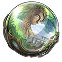
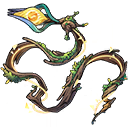
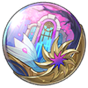

추천 광추
무지개가 영원히 하늘에 머물길
속도 +18% · 아군 HP 소모
효과 자세히
이카의 다음 공격에 추가 피해와 적이 받는 피해 증가.
기억은 영원히 막을 내리지 않는다
속도 +12%
효과 자세히
히아킨 전투 스킬 후 팀 피해 +16% 3턴.
이야기의 다음 페이지
HP 최대치 +32%
효과 자세히
이카 공격 후 히아킨과 이카 치유량 +24% 1턴.
추천 유물
태양과 번개의 여전사 4 · 사색하는 거목 2
- 머리
 주옵션HP부옵션속도 · HP% · 치명타 피해 · 효과 저항
주옵션HP부옵션속도 · HP% · 치명타 피해 · 효과 저항 - 손
 주옵션공격력부옵션속도 · HP% · 치명타 피해 · 효과 저항
주옵션공격력부옵션속도 · HP% · 치명타 피해 · 효과 저항 - 몸통
 주옵션치유량 / HP%부옵션속도 · HP% (주옵션 제외) · 치명타 피해 · 효과 저항
주옵션치유량 / HP%부옵션속도 · HP% (주옵션 제외) · 치명타 피해 · 효과 저항 - 다리
 주옵션속도부옵션HP% · 치명타 피해 · 효과 저항
주옵션속도부옵션HP% · 치명타 피해 · 효과 저항 - 구체

주옵션HP%부옵션속도 · 치명타 피해 · 효과 저항 - 매듭

주옵션에너지 회복효율부옵션속도 · HP% · 치명타 피해 · 효과 저항
이 조합을 추천하는 이유
이카의 치유로 축복 효과를 유지. 장신구는 속도 135/180에서 치유량을 단계적으로 늘린다.
태양과 번개의 여전사 4 · 영원의 땅 앰포리어스 2
- 머리
주옵션HP부옵션속도 · HP% · 치명타 피해 · 효과 저항
- 손
주옵션공격력부옵션속도 · HP% · 치명타 피해 · 효과 저항
- 몸통
주옵션치유량 / HP%부옵션속도 · HP% (주옵션 제외) · 치명타 피해 · 효과 저항
- 다리
주옵션속도부옵션HP% · 치명타 피해 · 효과 저항
- 구체

주옵션HP%부옵션속도 · 치명타 피해 · 효과 저항 - 매듭
 주옵션에너지 회복효율부옵션속도 · HP% · 치명타 피해 · 효과 저항
주옵션에너지 회복효율부옵션속도 · HP% · 치명타 피해 · 효과 저항
이 조합을 추천하는 이유
속도와 기억 정령 편성으로 팀 지원. 정령이 여러 개면 팀 효과를 확인.
이 정도면 잘 키웠다
동일 파티·광추 기준 · 조건 [*]
| 스탯 | 추천 스탯 | 준종결 | 종결 |
|---|---|---|---|
| 속도 [*] 승급 6단계 HP·치유 효과의 전투 속도 조건. | 전투 200+ | 전투 200+ | 전투 200+ |
| HP [*] 필살기의 HP 최대치 증가 효과는 별도. | 마을 4,300 | 마을 4,650 | 마을 5,000+ |
| 치명타 피해 [*] 치유 중심이면 속도·HP부터 확보. | 마을 100% | 마을 110% | 마을 120%+ |
육성 단계의 기준
Lv.80·유물 +15 기준. 입문·중간 목표는 육성 편의를 위한 단계이며, 완성값의 버프와 편성 조건은 각주를 확인.
성혼과 추천 돌파
HP 소모 팀에서 회복을 늘리려면 1돌. 아군 순환을 빠르게 하려면 2돌.
1필살기 상태 아군 HP +50%추천
공격 후 히아킨 최대 HP의 8% 회복.
2아군 HP 감소 → 속도 +30%추천
2턴.
3필살기 +2 · 일반 공격·정령 스킬 +1
해당 스킬과 대응 강화 스킬의 레벨을 올린다.
4초과 속도 1당 치피 +2%
히아킨과 이카에 적용. 승급 6단계 기준.
5스킬·특성 +2 · 정령 특성 +1
해당 스킬과 대응 강화 스킬의 레벨을 올린다.
6이카 누적 치유 초기화 12%
이카가 필드에 있으면 팀 모든 속성 저항 관통 +20%.
추천 파티


기본 운영과 행적
기본 운영
전투 스킬로 이카 소환. 큰 피해 전에 필살기로 HP 최대치를 올리고, 아군이 HP를 소모하면 이카의 치유를 활용한다.
행적 육성 순서
치유형은 필살기 → 기억 정령 특성·전투 스킬. 딜형은 특성·기억 정령 스킬 우선. 승급 4단계로 해제, 6단계로 속도 연동 치유.
아하 속도 계산기 →기준과 출처 · 2026-11-25
4.7 게임 데이터 · Prydwen 개별 빌드